배치 시안 비교 — ‘오늘 할 일’ 위치 · 동료 상세 · 하루 진행 뒤 읽던 자리
2026-10-09 · 기준 커밋 3b60314 · 백로그 B53(UX-04·UX-05·PPL-11·UX-23·PPL-35의 2·3) · Chromium 에뮬레이션 7개 프로필 · 시안은 버릴 시제품(선택 근거용)이며 사용자 선택을 기다린다. 자세한 수치와 방법은 같은 폴더의 README.md.
세 문제: (1) T1 직후 ‘오늘 할 일’이 화면 밖(UX-04). (2) 동료 카드를 누르면 화면이 상세 단추로 굴러 카드가 사라지고, 상세를 펼쳐도 훈련 칸이 안 보인다(UX-05·PPL-11·P14-05). (3) 부산 현지 패널을 연 채 오른쪽 칸을 읽다 하루를 진행하면 그 칸이 밀린다(UX-23·PPL-35).
세 시안 공통: 카드로 고르면 상세를 그 카드 바로 아래에(줄로 고르면 지금처럼 운영표 아래), 펼치면 훈련·고용 단추를 화면 안으로 가져온다. 7개 프로필 모두 카드가 제자리(−1~0px)이고 훈련 단추가 보인다. M1 화면은 HTML까지 그대로다.
다른 점: A는 막대에 ‘오늘 할 일 N건’ 단추 + 마지막으로 조작한 열 기준, B는 계약을 견적판 위로·오른쪽 칸을 ‘오늘 할 일’부터, C는 오른쪽 칸을 따로 굴러가는 창으로.
권고 공통 + A. 막대 높이·첫 화면·M1을 바꾸지 않고 7개 프로필 모두에서 ‘오늘 할 일’ 건수가 하루 진행 옆에 보이며, 오른쪽 칸을 읽던 자리도 0px로 지킨다. C는 가장 강하지만 굴러가는 칸이 둘이 되고 WebKit을 재지 못했다. 사용성 시험에서 오른쪽 칸을 오래 읽는 모습이 보이면 그때 C를 다시 본다. K1(−414~−421px)은 세 시안 모두 그대로라 따로 다룬다.
시안 셋
탭을 누르면 도식·바뀐 것·장단점·스크린숏(1366×657 마우스)이 바뀝니다. 도식의 노란 칸이 ‘오늘 할 일’입니다.
지금(3b60314)
- ‘오늘 할 일’은 오른쪽 칸 맨 아래. T1 뒤 1366×657에서 띠보다 182~215px 아래, 1180·1024·1133px 폭에서는 제목만 띠 끝에 걸리고 항목은 밖.
- 카드를 누르면 운영표 아래 상세 단추로 굴러 카드가 124~458px 위로 밀린다. 상세를 펼쳐도 훈련 단추는 526~645px 아래(P14-05).
- 현지 패널을 연 채 오른쪽 칸을 읽다 하루 진행 → 그 제목이 −55~−82px, 미리 보기를 띄웠으면 −469px. K1 −414~−421px.
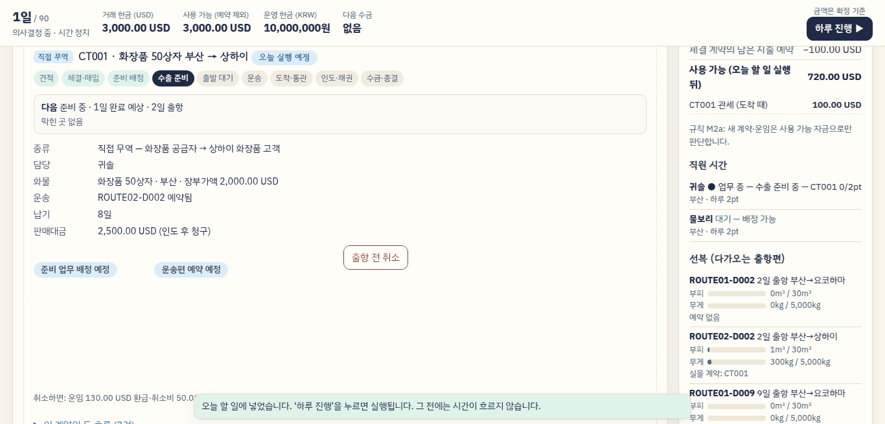
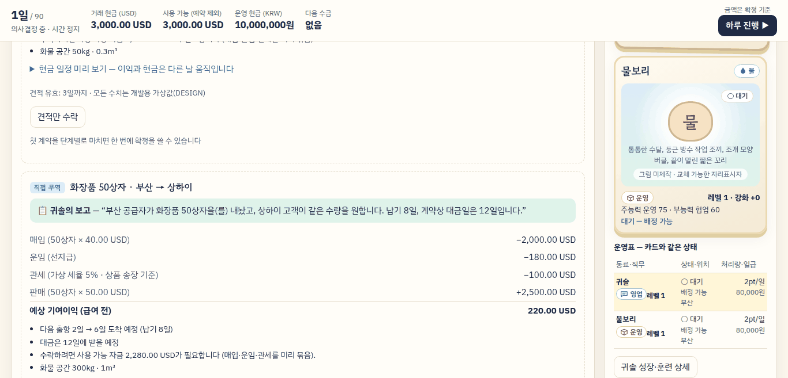
A — 제자리 고치기 권고
- 배치 격자·화면 코드 순서는 그대로. 고정 막대 ‘하루 진행’ 왼쪽에 ‘오늘 할 일 N건’ 단추 — 누르면 그 칸으로.
- 하루 진행 뒤 읽던 자리를 마지막으로 누르거나 굴리거나 초점을 둔 열에서 고른다(세 열일 때).
- 공통: 카드 아래 상세, 펼치면 훈련·고용 단추를 띠 안으로(알림 자리 72px 비움).
좋은 점
- 가장 작은 변경(
main.ts·style.css·growth.ts한 줄). 격자·화면 코드 순서·거래 순서 그대로. - ‘오늘 할 일 N건’이 하루 진행 바로 옆에 늘 보인다 — 7개 프로필 모두, 한 열 포함. 막대 높이는 그대로.
- 오른쪽 칸을 누르거나 굴리며 읽었으면 하루 진행 뒤 그 제목이 제자리(RQ·RQB·RR 0px, 세 열 6개 프로필).
대가
- ‘오늘 할 일’ 칸 자체는 T1 뒤에도 화면 밖(1366×657에서 182~215px 아래). 단추를 누르면 읽던 계약을 떠난다.
- 마지막 조작 규칙은 오른쪽 칸을 누르거나 굴린 적이 있어야 작동. 스크롤 막대·키보드로만 내려 읽었으면 지금처럼 주 열 기준이다. 잘못 고르면 주 열이 그만큼 움직인다.
- 시험 1개(막대 HTML 전체를 고정한 TASK-0013 시험)를 금액 칸 비교로 고쳐야 한다.
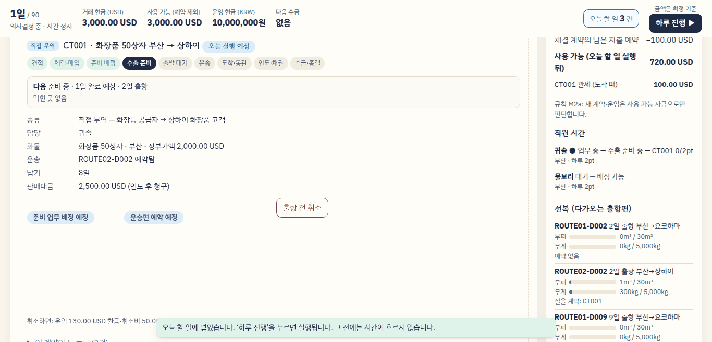
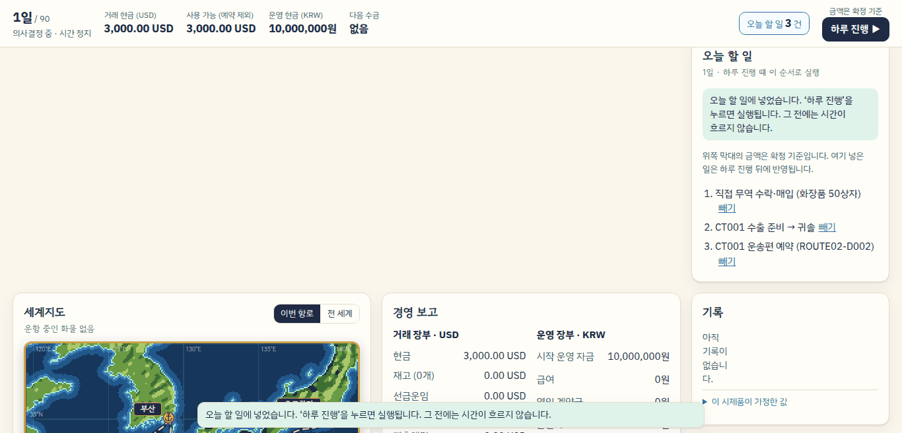
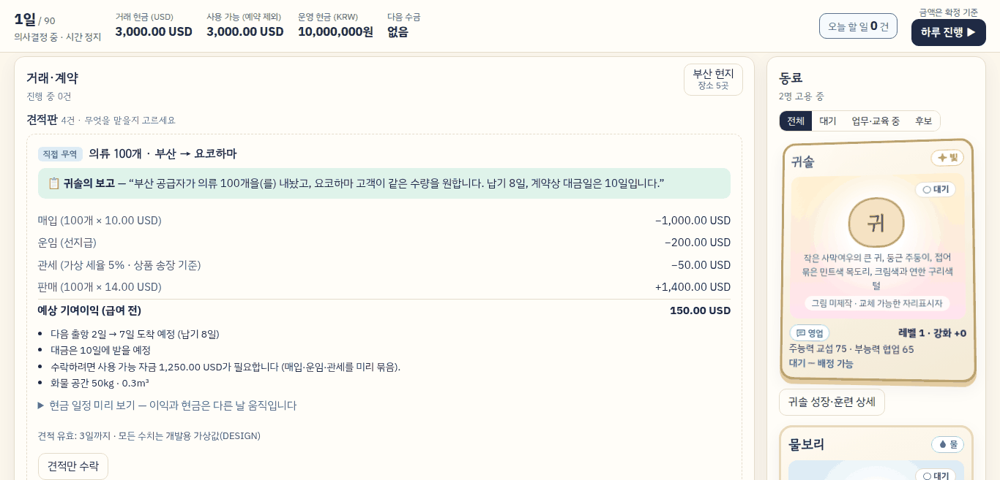
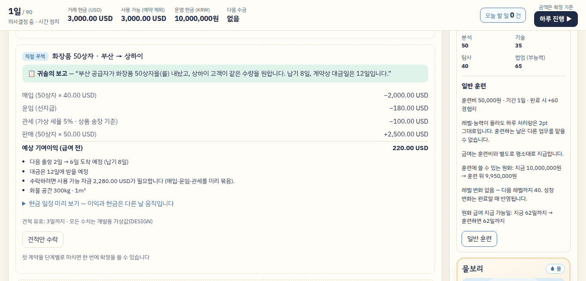
B — 순서 바꾸기
- 진행 중 계약을 견적판 위로. 수락하면 화면이 거래 칸 맨 위로 돌아온다.
- 오른쪽 칸 순서 오늘 할 일 → 동료 → 자원 예약, 화면 코드 순서 = 보이는 순서(Tab 순서도 바로잡힘).
- 읽던 자리 규칙은 A와 같다. 공통 부분 포함.
좋은 점
- 세 열 6개 프로필에서 T1 뒤 ‘오늘 할 일’ 제목과 항목이 화면 안.
- 화면 코드 순서 = 보이는 순서(미룬 ‘Tab 순서’ 항목 해결).
- 계약이 위라 견적이 만료돼도 계약이 움직이지 않는다.
대가
- 새 계약 제목이 막대 아래 72px — TASK-0014 기준(0~60px)을 넘는다.
- 한 열(1000×700)에서 T1 뒤 ‘오늘 할 일’이 2,280px 아래로 멀어진다(지금 133px).
- 거래 칸 순서가 바뀌어 사용성 시험 절차서(T1·T3 안내, ‘세 열에서 볼 것’)를 고쳐야 한다. 위쪽 ‘오늘 할 일’이 자라면 오른쪽 칸 전체가 밀린다.
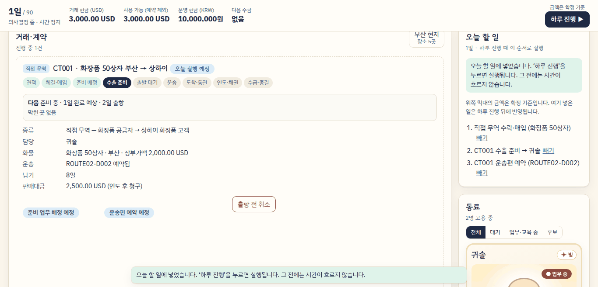
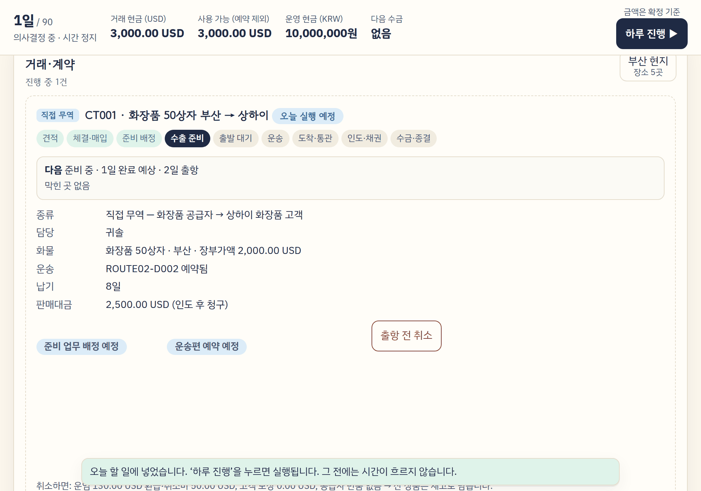
C — 오른쪽 창
- 세 열에서 오른쪽 칸이 고정 막대 아래 붙은 창이 되어 따로 굴러간다(맨 위가 ‘오늘 할 일’).
- 다시 그릴 때마다 창의 굴림 위치를 되살린다. 하루 진행의 화면 굴림은 주 열에만 작용해 오른쪽 칸은 구조적으로 제자리.
- 거래 칸 순서·한 열 배치는 그대로. 공통 부분 포함.
좋은 점
- 세 열에서 T1 뒤 ‘오늘 할 일’이 창 맨 위에 보인다.
- 오른쪽 칸을 읽던 자리는 조작 추적 없이 구조적으로 제자리(스크롤 막대·키보드여도). 주 열 대조(MQ)도 그대로.
- 화면 코드 순서 = 보이는 순서. 페이지가 오른쪽 칸 길이만큼 늘지 않는다.
대가
- 굴러가는 칸이 둘. 오른쪽 위에서 휠·손가락을 쓰면 창만 굴러가고, 끝에 닿아도 페이지로 넘어가지 않는다.
- 창을 내려 동료를 보면 ‘오늘 할 일’은 다시 가려진다. 페이지 맨 위에서는 창 아래 끝 78~140px이 화면 밖(1024×768에서 카드 아래 상세 단추가 그 자리에 가림).
- 모든 다시 그리기에 창 위치 되살리기가 끼어들고, F1·띠 계산·시험 도구가 창을 알아야 한다. iPad Safari(WebKit) 미측정. K1은 그대로.
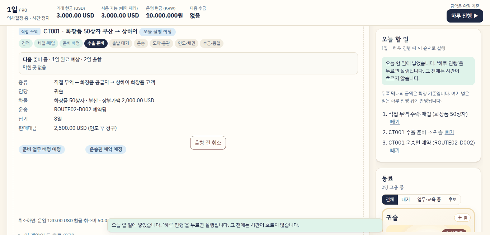
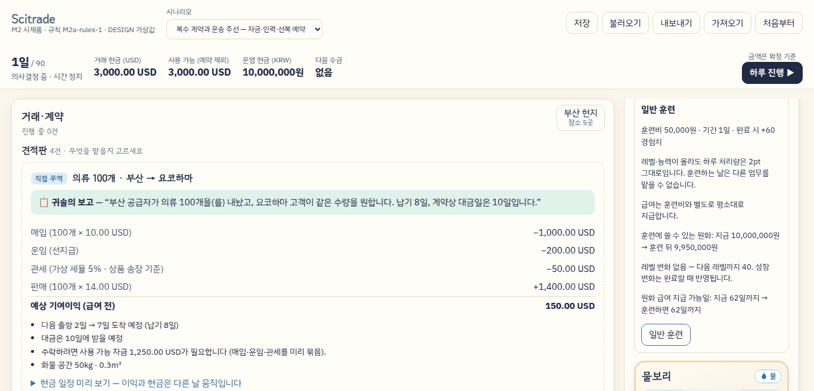
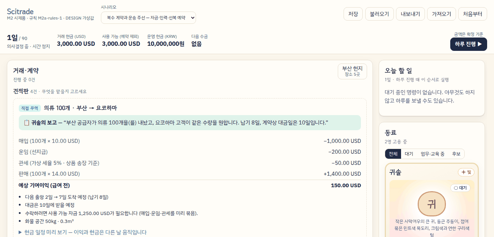
수치 비교 (7개 프로필)
‘보임’은 고정 막대 아래부터 아래쪽 알림 위까지(시안 C는 오른쪽 창의 상자까지) 요소 전체가 들어온 것. 위치 변화는 화면 위 px(음수 = 위로). 각 칸은 한 번 잰 값이다.
T1 뒤 ‘오늘 할 일’ 제목 (띠 = 고정 막대 아래 ~ 아래쪽 알림 위)
| 시안 | 1366×657 마우스 | 1366×657 터치 | 1180×820 터치 | 1024×768 터치 | 1133×744 터치 | 1920×969 마우스 | 1000×700 한 열 터치 |
|---|---|---|---|---|---|---|---|
| 지금(3b60314) | 215px 아래 | 182px 아래 | 제목만 보임 | 제목만 보임 | 제목만 보임 | 아래 끝에 걸침 | 133px 아래 |
| A 제자리 | 215px 아래 · 단추 보임 | 182px 아래 · 단추 보임 | 제목만 보임 · 단추 보임 | 제목만 보임 · 단추 보임 | 제목만 보임 · 단추 보임 | 아래 끝에 걸침 · 단추 보임 | 133px 아래 · 단추 보임 |
| B 순서 | 보임 | 보임 | 보임 | 보임 | 보임 | 보임 | 2280px 아래 |
| C 오른쪽 창 | 보임 | 보임 | 보임 | 보임 | 보임 | 보임 | 133px 아래 |
시안 A: T1 뒤 ‘오늘 할 일 N건’ 단추를 한 번 누른 뒤
| 시안 | 1366×657 마우스 | 1366×657 터치 | 1180×820 터치 | 1024×768 터치 | 1133×744 터치 | 1920×969 마우스 | 1000×700 한 열 터치 |
|---|---|---|---|---|---|---|---|
| A 제자리 | 제목·첫 항목 보임 | 제목·첫 항목 보임 | 제목·첫 항목 보임 | 제목·첫 항목 보임 | 제목·첫 항목 보임 | 제목·첫 항목 보임 | 제목·첫 항목 보임 |
T1 뒤 새 계약 제목: 막대 아래 px (TASK-0014 기준 0~60)
| 시안 | 1366×657 마우스 | 1366×657 터치 | 1180×820 터치 | 1024×768 터치 | 1133×744 터치 | 1920×969 마우스 | 1000×700 한 열 터치 |
|---|---|---|---|---|---|---|---|
| 지금(3b60314) | 3 | 3 | 3 | 3 | 2 | 3 | 3 |
| A 제자리 | 3 | 3 | 3 | 3 | 2 | 3 | 3 |
| B 순서 | 72 | 72 | 72 | 73 | 72 | 72 | 73 |
| C 오른쪽 창 | 3 | 3 | 3 | 3 | 2 | 3 | 3 |
고정 막대 높이 px
| 시안 | 1366×657 마우스 | 1366×657 터치 | 1180×820 터치 | 1024×768 터치 | 1133×744 터치 | 1920×969 마우스 | 1000×700 한 열 터치 |
|---|---|---|---|---|---|---|---|
| 지금(3b60314) | 72 | 79 | 79 | 79 | 79 | 72 | 79 |
| A 제자리 | 72 | 79 | 79 | 79 | 79 | 72 | 79 |
| B 순서 | 72 | 79 | 79 | 79 | 79 | 72 | 79 |
| C 오른쪽 창 | 72 | 79 | 79 | 79 | 79 | 72 | 79 |
1일 첫 화면: 거래 제목 위치 px / 첫 견적이 첫 화면에 있나
| 시안 | 1366×657 마우스 | 1366×657 터치 | 1180×820 터치 | 1024×768 터치 | 1133×744 터치 | 1920×969 마우스 | 1000×700 한 열 터치 |
|---|---|---|---|---|---|---|---|
| 지금(3b60314) | 183 / 예 | 199 / 예 | 199 / 예 | 252 / 예 | 199 / 예 | 183 / 예 | 252 / 예 |
| A 제자리 | 183 / 예 | 199 / 예 | 199 / 예 | 252 / 예 | 199 / 예 | 183 / 예 | 252 / 예 |
| B 순서 | 183 / 예 | 199 / 예 | 199 / 예 | 252 / 예 | 199 / 예 | 183 / 예 | 252 / 예 |
| C 오른쪽 창 | 183 / 예 | 199 / 예 | 199 / 예 | 252 / 예 | 199 / 예 | 183 / 예 | 252 / 예 |
동료 카드 누름: 카드 위치 변화 px (막대+40에 두고 누름)
| 시안 | 1366×657 마우스 | 1366×657 터치 | 1180×820 터치 | 1024×768 터치 | 1133×744 터치 | 1920×969 마우스 | 1000×700 한 열 터치 |
|---|---|---|---|---|---|---|---|
| 지금(3b60314) | −436 | −458 | −295 | −401 | −371 | −124 | −163 |
| A 제자리 | −1 | −1 | −1 | −1 | −1 | −1 | 0 |
| B 순서 | −1 | −1 | −1 | −1 | −1 | −1 | 0 |
| C 오른쪽 창 | 0 | 0 | 0 | 0 | 0 | 0 | 0 |
운영표 줄 누름: 줄 위치 변화 px
| 시안 | 1366×657 마우스 | 1366×657 터치 | 1180×820 터치 | 1024×768 터치 | 1133×744 터치 | 1920×969 마우스 | 1000×700 한 열 터치 |
|---|---|---|---|---|---|---|---|
| 지금(3b60314) | 0 | 0 | 0 | 0 | 0 | 0 | 0 |
| A 제자리 | 0 | 0 | 0 | 0 | 0 | 0 | 0 |
| B 순서 | 0 | 0 | 0 | 0 | 0 | 0 | 0 |
| C 오른쪽 창 | 0 | 0 | 0 | 0 | 0 | 0 | 0 |
카드 → 상세 펼침: 훈련 단추 / 훈련을 넣은 뒤 예정 표시
| 시안 | 1366×657 마우스 | 1366×657 터치 | 1180×820 터치 | 1024×768 터치 | 1133×744 터치 | 1920×969 마우스 | 1000×700 한 열 터치 |
|---|---|---|---|---|---|---|---|
| 지금(3b60314) | 637px 아래 | 645px 아래 | 645px 아래 | 644px 아래 | 645px 아래 | 637px 아래 | 526px 아래 |
| A 제자리 | 보임 | 보임 | 보임 | 보임 | 보임 | 보임 | 보임 |
| B 순서 | 보임 | 보임 | 보임 | 보임 | 보임 | 보임 | 보임 |
| C 오른쪽 창 | 보임 | 보임 | 보임 | 보임 | 보임 | 보임 | 보임 |
운영표 줄 → 상세 펼침: 훈련 단추
| 시안 | 1366×657 마우스 | 1366×657 터치 | 1180×820 터치 | 1024×768 터치 | 1133×744 터치 | 1920×969 마우스 | 1000×700 한 열 터치 |
|---|---|---|---|---|---|---|---|
| 지금(3b60314) | 352px 아래 | 382px 아래 | 219px 아래 | 324px 아래 | 295px 아래 | 40px 아래 | 274px 아래 |
| A 제자리 | 보임 | 보임 | 보임 | 보임 | 보임 | 보임 | 보임 |
| B 순서 | 보임 | 보임 | 보임 | 보임 | 보임 | 보임 | 보임 |
| C 오른쪽 창 | 보임 | 보임 | 보임 | 보임 | 보임 | 보임 | 보임 |
4일 면담 펼침(면담 단추를 막대+120): 고용 단추 / 면담 칸 높이
| 시안 | 1366×657 마우스 | 1366×657 터치 | 1180×820 터치 | 1024×768 터치 | 1133×744 터치 | 1920×969 마우스 | 1000×700 한 열 터치 |
|---|---|---|---|---|---|---|---|
| 지금(3b60314) | 보임 · 352px | 보임 · 358px | 보임 · 358px | 보임 · 358px | 보임 · 358px | 보임 · 352px | 보임 · 207px |
| A 제자리 | 보임 · 352px | 보임 · 358px | 보임 · 358px | 보임 · 358px | 보임 · 358px | 보임 · 352px | 보임 · 207px |
| B 순서 | 보임 · 352px | 보임 · 358px | 보임 · 358px | 보임 · 358px | 보임 · 358px | 보임 · 352px | 보임 · 207px |
| C 오른쪽 창 | 보임 · 352px | 보임 · 358px | 보임 · 358px | 보임 · 358px | 보임 · 358px | 보임 · 352px | 보임 · 207px |
카드를 띠 아래쪽(목표: 위 끝이 띠 아래 끝 −200px)에 두고 누름: 누르기 전 카드 위 끝 px에서 위치 변화 / 상세 펼친 뒤 훈련 단추
| 시안 | 1366×657 마우스 | 1366×657 터치 | 1180×820 터치 | 1024×768 터치 | 1133×744 터치 | 1920×969 마우스 | 1000×700 한 열 터치 |
|---|---|---|---|---|---|---|---|
| 지금(3b60314) | 279에서 −525 / 훈련 637px 아래 | 311에서 −563 / 훈련 645px 아래 | 311에서 −400 / 훈련 645px 아래 | 365에서 −506 / 훈련 644px 아래 | 311에서 −476 / 훈련 645px 아래 | 279에서 −213 / 훈련 637px 아래 | 500에서 −403 / 훈련 526px 아래 |
| A 제자리 | 279에서 −2 / 훈련 보임 | 311에서 −41 / 훈련 보임 | 311에서 −1 / 훈련 보임 | 365에서 −1 / 훈련 보임 | 311에서 −1 / 훈련 보임 | 279에서 −1 / 훈련 보임 | 500에서 −204 / 훈련 보임 |
| B 순서 | 451에서 −174 / 훈련 보임 | 457에서 −187 / 훈련 보임 | 483에서 −50 / 훈련 보임 | 537에서 −156 / 훈련 보임 | 483에서 −126 / 훈련 보임 | 451에서 −1 / 훈련 보임 | 500에서 −204 / 훈련 보임 |
| C 오른쪽 창 | 451에서 −174 / 훈련 보임 | 457에서 −187 / 훈련 보임 | 483에서 −50 / 훈련 보임 | 537에서 −155 · 상세 단추 가림 / 훈련 보임 | 483에서 −126 / 훈련 보임 | 451에서 −1 / 훈련 보임 | 500에서 −204 / 훈련 보임 |
4일 면담 펼침(면담 단추를 띠 아래 끝 −80px): 고용 단추 / 면담 칸 높이
| 시안 | 1366×657 마우스 | 1366×657 터치 | 1180×820 터치 | 1024×768 터치 | 1133×744 터치 | 1920×969 마우스 | 1000×700 한 열 터치 |
|---|---|---|---|---|---|---|---|
| 지금(3b60314) | 272px 아래 · 352px | 283px 아래 · 358px | 283px 아래 · 358px | 283px 아래 · 358px | 283px 아래 · 358px | 272px 아래 · 352px | 151px 아래 · 207px |
| A 제자리 | 보임 · 352px | 보임 · 358px | 보임 · 358px | 보임 · 358px | 보임 · 358px | 보임 · 352px | 보임 · 207px |
| B 순서 | 보임 · 352px | 보임 · 358px | 보임 · 358px | 보임 · 358px | 보임 · 358px | 보임 · 352px | 보임 · 207px |
| C 오른쪽 창 | 보임 · 352px | 보임 · 358px | 보임 · 358px | 보임 · 358px | 보임 · 358px | 보임 · 352px | 보임 · 207px |
현지 패널 연 채 하루 진행 — 오른쪽 ‘오늘 할 일’을 읽던 중(RQ): 그 제목의 이동 px
| 시안 | 1366×657 마우스 | 1366×657 터치 | 1180×820 터치 | 1024×768 터치 | 1133×744 터치 | 1920×969 마우스 | 1000×700 한 열 터치 |
|---|---|---|---|---|---|---|---|
| 지금(3b60314) | −82 | −75 | −75 | −75 | −75 | −82 | 0 |
| A 제자리 | 0 | 0 | 0 | 0 | 0 | 0 | 0 |
| B 순서 | 0 | 0 | 0 | 0 | 0 | 0 | 0 |
| C 오른쪽 창 | 0 | 0 | 0 | 0 | 0 | 0 | 0 |
같은 경우, 미리 보기를 띄운 상태(RQB): ‘오늘 할 일’ 제목 이동 px
| 시안 | 1366×657 마우스 | 1366×657 터치 | 1180×820 터치 | 1024×768 터치 | 1133×744 터치 | 1920×969 마우스 | 1000×700 한 열 터치 |
|---|---|---|---|---|---|---|---|
| 지금(3b60314) | −469 | −469 | −469 | −469 | −469 | −469 | 0 |
| A 제자리 | 0 | 0 | 0 | 0 | 0 | 0 | 0 |
| B 순서 | 0 | 0 | 0 | 0 | 0 | 0 | 0 |
| C 오른쪽 창 | 0 | 0 | 0 | 0 | 0 | 0 | 0 |
RQB에서 주 열(셋째 견적 제목) 이동 px — 오른쪽을 지킨 대가
| 시안 | 1366×657 마우스 | 1366×657 터치 | 1180×820 터치 | 1024×768 터치 | 1133×744 터치 | 1920×969 마우스 | 1000×700 한 열 터치 |
|---|---|---|---|---|---|---|---|
| 지금(3b60314) | 0 | 0 | 0 | 0 | 0 | 0 | 0 |
| A 제자리 | +469 | +469 | +469 | +469 | +469 | +469 | 0 |
| B 순서 | +423 | +423 | +423 | +423 | +423 | +423 | 0 |
| C 오른쪽 창 | 0 | 0 | 0 | 0 | 0 | 0 | 0 |
오른쪽 ‘자원 예약’을 읽던 중(RR): 그 제목의 이동 px
| 시안 | 1366×657 마우스 | 1366×657 터치 | 1180×820 터치 | 1024×768 터치 | 1133×744 터치 | 1920×969 마우스 | 1000×700 한 열 터치 |
|---|---|---|---|---|---|---|---|
| 지금(3b60314) | −62 | −55 | −55 | −55 | −55 | −62 | +20 |
| A 제자리 | 0 | 0 | 0 | 0 | 0 | 0 | +20 |
| B 순서 | 0 | 0 | 0 | 0 | 0 | 0 | +20 |
| C 오른쪽 창 | 0 | 0 | 0 | 0 | 0 | 0 | +20 |
대조 — 주 열 셋째 견적을 읽던 중(MQ): 그 제목의 이동 px
| 시안 | 1366×657 마우스 | 1366×657 터치 | 1180×820 터치 | 1024×768 터치 | 1133×744 터치 | 1920×969 마우스 | 1000×700 한 열 터치 |
|---|---|---|---|---|---|---|---|
| 지금(3b60314) | 0 | 0 | 0 | 0 | 0 | 0 | 0 |
| A 제자리 | 0 | 0 | 0 | 0 | 0 | 0 | 0 |
| B 순서 | 0 | 0 | 0 | 0 | 0 | 0 | 0 |
| C 오른쪽 창 | 0 | 0 | 0 | 0 | 0 | 0 | 0 |
K1 — 4일, 미리 보기를 띄운 채 아래 계약을 읽던 중: 계약 제목 이동 px
| 시안 | 1366×657 마우스 | 1366×657 터치 | 1180×820 터치 | 1024×768 터치 | 1133×744 터치 | 1920×969 마우스 | 1000×700 한 열 터치 |
|---|---|---|---|---|---|---|---|
| 지금(3b60314) | −414 | −421 | −421 | −421 | −421 | −414 | −421 |
| A 제자리 | −414 | −421 | −421 | −421 | −421 | −414 | −421 |
| B 순서 | −414 | −421 | −421 | −421 | −421 | −414 | −421 |
| C 오른쪽 창 | −414 | −421 | −421 | −421 | −421 | −414 | −421 |
M1 화면(1일·수락 뒤·2일 전체 HTML과 패널 위치)
| 시안 | 1366×657 마우스 | 1366×657 터치 | 1180×820 터치 | 1024×768 터치 | 1133×744 터치 | 1920×969 마우스 | 1000×700 한 열 터치 |
|---|---|---|---|---|---|---|---|
| 지금(3b60314) | 기준 | 기준 | 기준 | 기준 | 기준 | 기준 | 기준 |
| A 제자리 | 같음 | 같음 | 같음 | 같음 | 같음 | 같음 | 같음 |
| B 순서 | 같음 | 같음 | 같음 | 같음 | 같음 | 같음 | 같음 |
| C 오른쪽 창 | 같음 | 같음 | 같음 | 같음 | 같음 | 같음 | 같음 |
가로 넘침·칸 넘침 요소 수(1일·T1·T5 상태 합)
| 시안 | 1366×657 마우스 | 1366×657 터치 | 1180×820 터치 | 1024×768 터치 | 1133×744 터치 | 1920×969 마우스 | 1000×700 한 열 터치 |
|---|---|---|---|---|---|---|---|
| 지금(3b60314) | 0 | 0 | 0 | 0 | 0 | 0 | 0 |
| A 제자리 | 0 | 0 | 0 | 0 | 0 | 0 | 0 |
| B 순서 | 0 | 0 | 0 | 0 | 0 | 0 | 0 |
| C 오른쪽 창 | 0 | 0 | 0 | 0 | 0 | 0 | 0 |
권고와 남은 일
권고: 공통 + A. 근거와 Sol 지시서에 넣을 것은 README.md 7·8절.
- B는 세 열의 ‘오늘 할 일’을 가장 자연스럽게 보이지만, 새 계약 제목 기준(0~60px)을 넘고 한 열에서 ‘오늘 할 일’을 2,280px 멀리 보낸다.
- C는 구조적으로 가장 단단하지만 굴러가는 칸이 둘이 되고, 모든 다시 그리기에 창 처리가 끼어든다. iPad Safari를 재지 못했다.
- A의 ‘마지막 조작 열’ 규칙은 오른쪽 칸을 누르거나 굴린 적이 있을 때만 작동한다. 사용성 시험에서 오른쪽 칸을 어떻게 읽는지(휠·손가락·스크롤 막대) 함께 관찰한다.
- K1은 주 열 안의 문제(남는 ② 제목 아래 미리 보기가 사라짐)라 열 규칙으로 풀리지 않는다. 후보: 마지막으로 굴린 손가락·포인터 높이에 가장 가까운 후보를 고르기, 또는 하루 진행 뒤에도 미리 보기 자리를 남기기(TASK-0012 결정과 충돌하므로 사용자 결정 필요).
재지 못한 것: WebKit(iPad Safari) 실제 동작, 실제 손가락 굴림의 관성, 실제 배율(이번 측정은 에뮬레이션 배율), 화면 읽기 프로그램, 사람 사용성. 시안은 시험 빌드에 넣지 않았다.